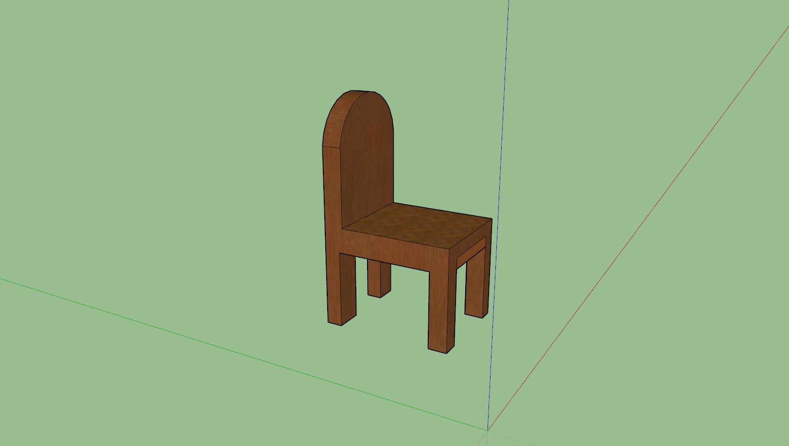
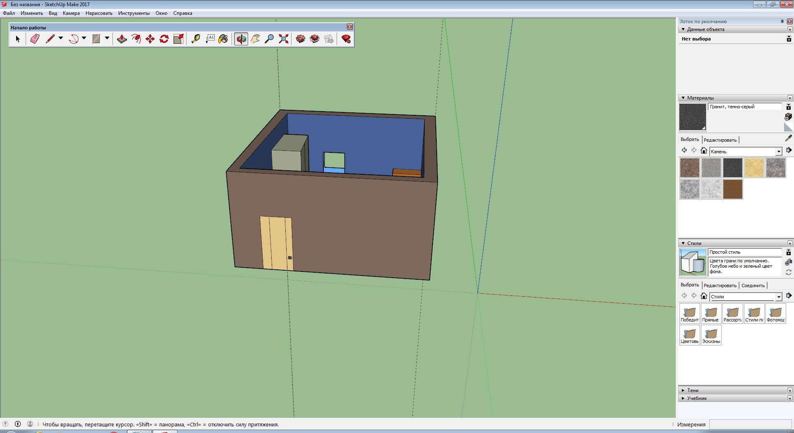
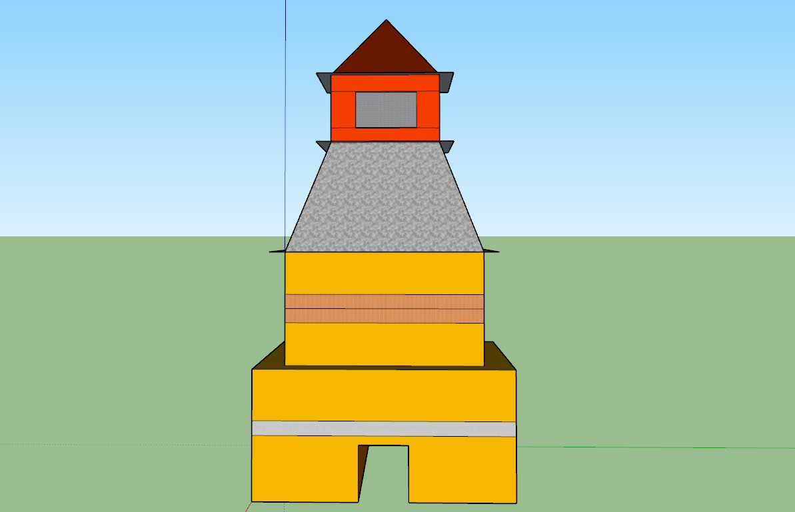
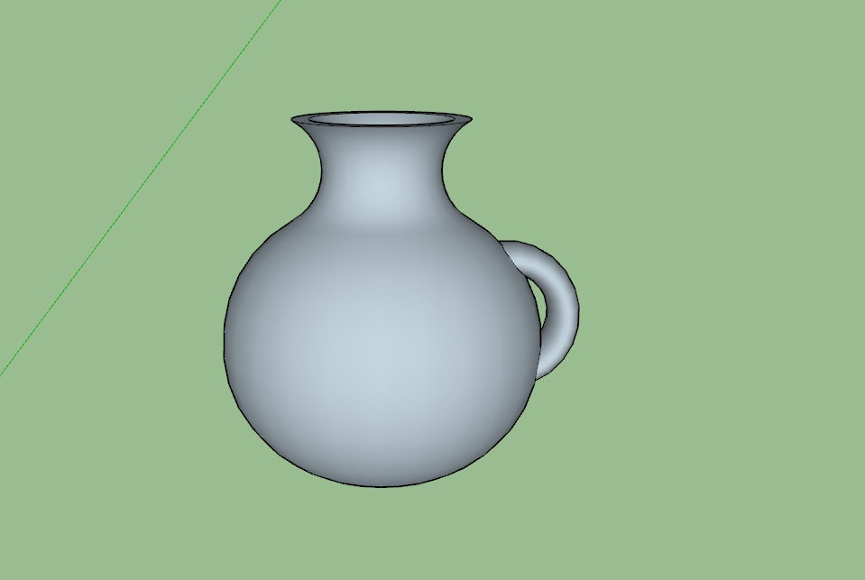
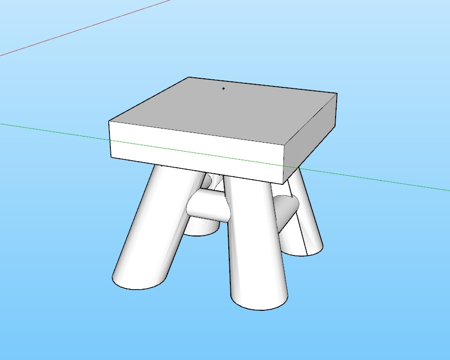
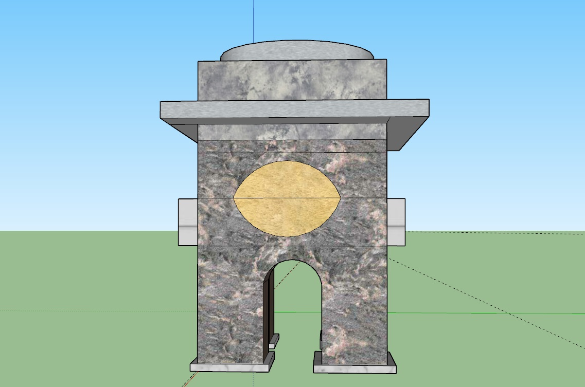
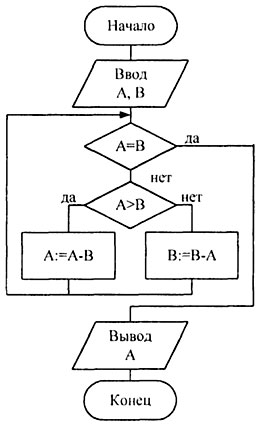
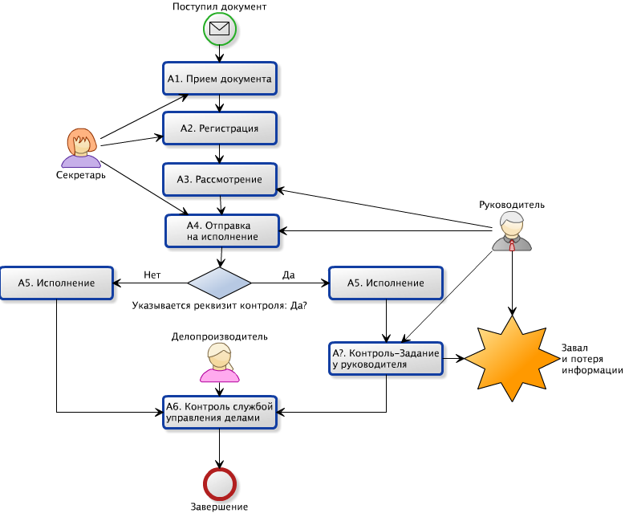

Векторная графика — способ представления объектов и изображений (формат описания) в компьютерной графике, основанный на математическом описании элементарных геометрических объектов, обычно называемых примитивами, таких как: точки, линии, сплайны, кривые Безье, круги и окружности, многоугольники.
       